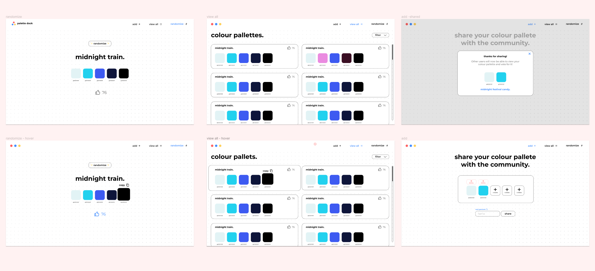

Team
Solo Project
My Role
Front end developer
UI Designer
Timeline
3 months (Winter 2024)
OVERVIEW
Concept
Overview I developed Palette Dock as a personal project to get more familiar with REST APIs. It is designed for designers to share and get inspired by other colour palettes. Made to simplify colour palette creation thanks to features such as drag and drop and AI generated palette names. Users can explore palettes created by others, vote for their favourites, sort them, filter by colour and randomize!
KEY FEATURES
Create and share palettes
Create palettes of up to five colours and share them with others.
Drag and drop while creating the palette
Rearrange your palette by dragging and dropping colours to get the perfect combination.
AI generated names to fit the palette
Having a hard time coming up with a name? Auto-generate names that are automatically tailored to best describe your palette.

View and interact with other shared palettes
View palettes created by others, then vote, sort and filter them.
Randomize
Don’t know which palette to choose? Click the randomize button to get a random one from the list.
COMPETATIVE ANALYSIS
Slow user experience
After analysing similar web-apps that allow users to share and view palettes, I noticed the following patterns that slowed down the user experience:
1. Palette creation and interaction was blocked by login walls with no guest option.
2. The navigation between palette creation vs palette viewing was difficult due to it being concealed.
3. The process for creating a palette contained many steps.
DESIGN
Make it speedy
Looking at the findings from the competitive analysis, I saw an opportunity to create a web app that allows users to create and view palettes with speed. This would be achieved with features such as:
1. Guest interaction without mandatory login.
2. Navigation with tabs for all views visible immediately.
3. Colour creation with minimal steps and tools such as auto generated palette names.
WIREFRAMES AND PLAN
Visualising the requirements
With the main features in mind, I created wireframes in Figma for three different views: create, view and randomize.

Planning the architecture
Before beginning the implementation, I outlined the necessary components and their hierarchical relationships in a tree structure.
TEST AND ITERATE
Challenges
After starting this project, I set it aside and returned to it 3 months later. Reviewing it with fresh eyes and getting users to test it helped me find three main issues:
Problem
The colour picker modal lacked clarity. The selected colour sample was too small, making it difficult to identify the selected colour. Also, it was unclear how to exit the modal.
Solution
Implemented a larger colour sample box and included a “done” button for clear modal exit.
Problem
Rearranging colours was tedious and time-consuming. Users had to re-select colours if they wanted to rearrange them.
Solution
Implemented a drag and drop functionality so users can quickly re-arrange colours.
Problem
I was storing the data on render which I found out was not data persistent and would delete added data after a few hours.
Solution
Explored other solutions and found out that I could use Firestore and still interact with the data using TEST APIs.
REFLECTION
Takeaways
Became familiar REST APIs. I achieved my main goal of learning about REST APIs and putting them into practice. I utilized a Firebase database, Firestore, and communicated with it through HTTP requests, including GET, POST, and PATCH.
Next Steps
Make it responsive. My next step is to make the web app responsive so it's accessible across various devices.
Create a chrome plugin. My next step would be making Palette Dock accessible through different forms. One step would be to explore how I can integrate it as a chrome plugin.
Provide user authentication. While guests can interact with palettes, it has limitations. Offering sign-up would let users save favourites, delete patterns, and follow other colour creators. Plus, they could access accounts across devices. This would also eliminate the reliance on local storage, currently used for vote tracking.